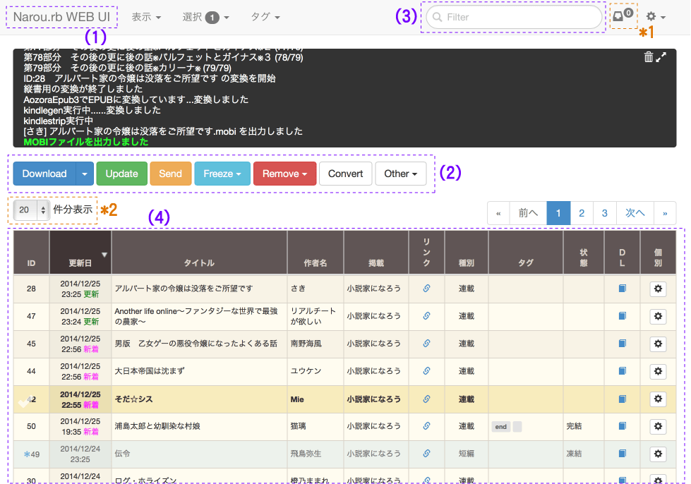

ブックマークレット
小説掲載サイトを表示したまま直接ダウンロード出来るブックマークレットです。
下記のリンクをブックマークに登録して、ダウンロードしたい小説のページで実行して下さい。（WEB UIサーバ起動中に限ります）
ブックマークバーにドラッグ＆ドロップしたり、右クリックからブックマークにいれると簡単です。
基本的に小説ページ内にダウンロード中の表示が出ますが、IEを使っていてかつ小説家になろうの小説をダウンロードしようとした場合のみ、技術的制約から別ウィンドウが開きます。
画面の簡単な説明

タイトルロゴ
1
クリックすることでページ上部に移動することができます
操作ボタン
2
押すことで各種操作を行うことが出来ます。Freeze, Remove, Convert, Other ボタンはひとつ以上の小説を選択していないと押すことは出来ません。また、Update, Send ボタンは小説をひとつも選択してない場合は全小説が対象に、選択しているときは選択した小説が対象になります。
各種操作は一旦キューに積まれ、順番に処理されます（Update 中に Convert を押しても、更新処理が終わるまでは変換はされない）。現在のキュー数は画面右上の*1で分かります。
検索ボックス
3
このボックスに入力することで、小説一覧から小説を絞り込む事ができます。小説一覧に見えている項目は全て検索対象で、日付等も対象になります。半角スペースで区切ることで、複数の単語で絞り込むことが出来ます。
小説一覧テーブル
4
現在管理している小説の一覧が表示されます。クリックすると選択状態になり、各種操作の対象となります。
テーブル上部の項目名をクリックすると、その項目でソートすることが出来ます。また、項目名を左右にドラッグ＆ドロップすることで、項目の順番を入れ替えることが出来ます。
表示項目はカスタマイズすることが可能です。上部メニューの「表示＞表示する項目を設定」から各種項目の表示・非表示を選択出来ます。
１ページに表示する件数を調整する場合は*2で行うことが出来ます。
上記の各種設定はブラウザに保存され、開き直した場合も同じ状態が復元されます。デフォルトの状態に戻す場合はメニューの「表示＞表示設定を全てリセット」を実行します。
タグ

小説にタグが設定されている場合、タグ欄に表示されます。そのタグをクリックすることで絞込ができるようになっています。タグを絞り込んだ状態で、さらに検索ボックスから検索することも可能です。
タグの絞込状態を解除するにはメニューのタグから解除ボタンを押すか、タグの右側にある小さな空白ラベルをクリックすることでも解除することが出来ます。
シングル選択モード
デフォルトの選択方法で、小説一覧をクリックしてひとつずつ選択するモードです。
範囲選択モード
一度に複数の小説を選択する場合に便利なモードです。始点をクリックしたあと終点をクリックして範囲を確定するか、始点から終点までをドラッグすることで範囲を決めることが出来ます。
範囲が確定された際にメニューが表示されるので、選択や解除等を選択します。反転は現在の選択状態を逆転させます。